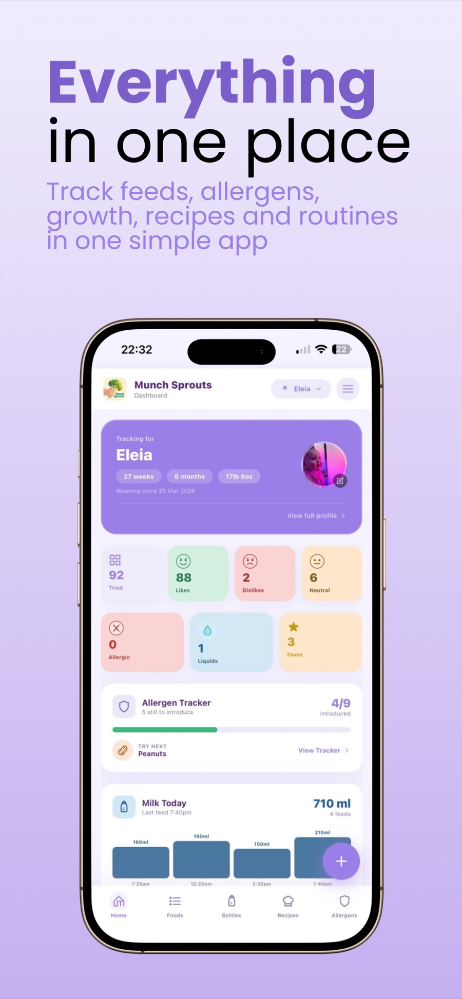
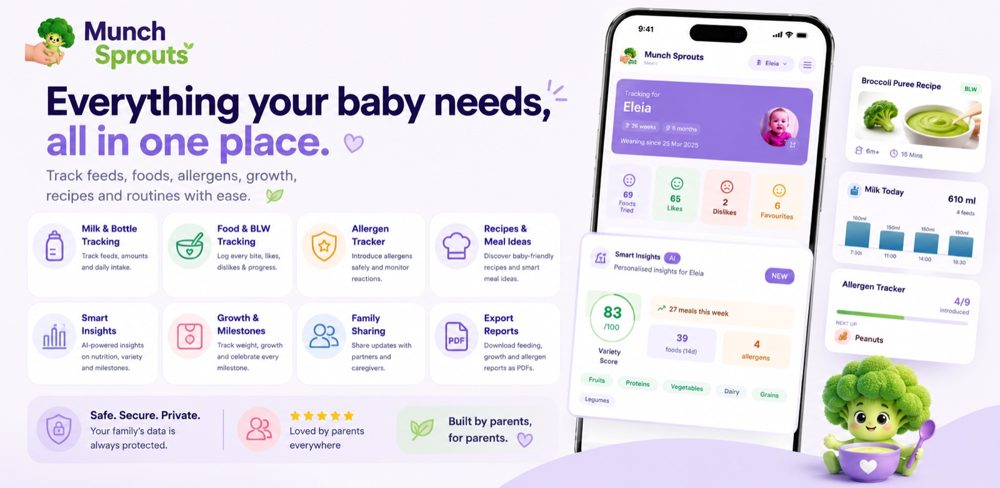
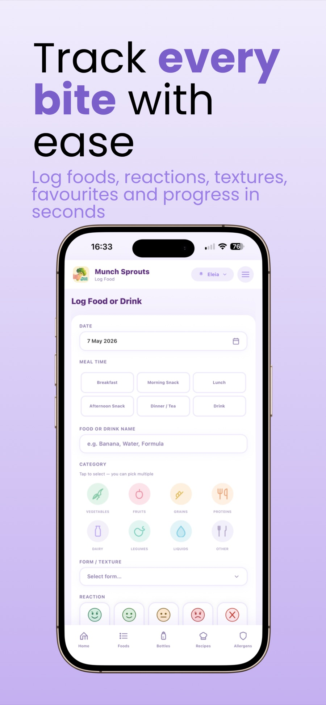
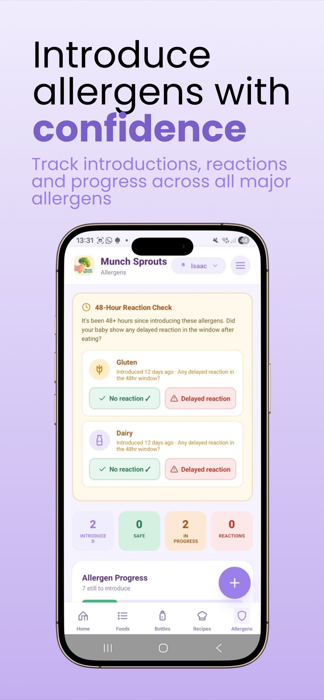
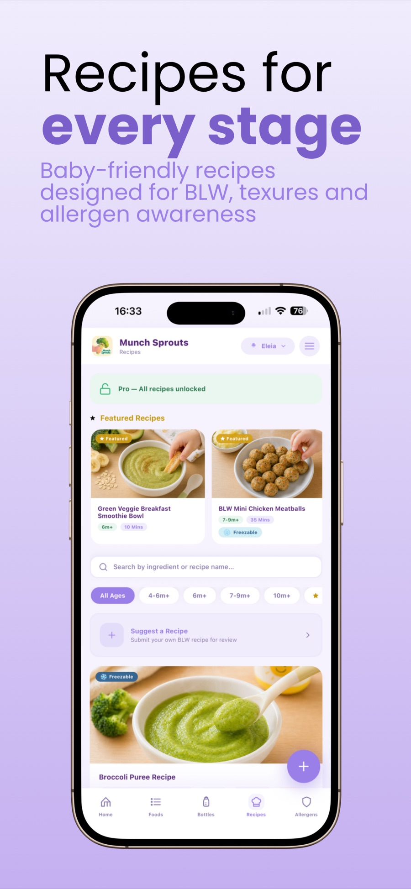
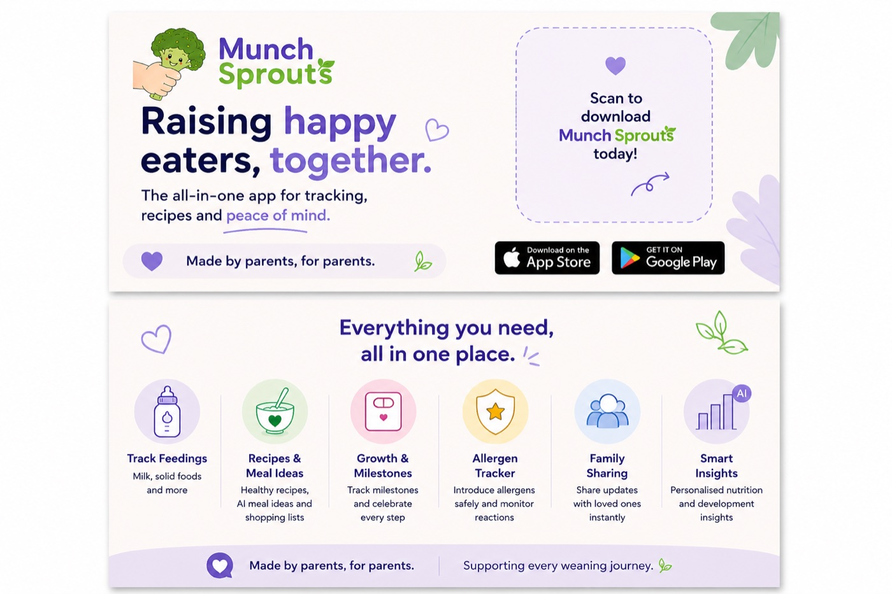
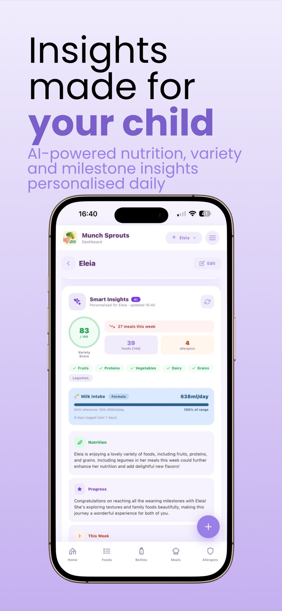
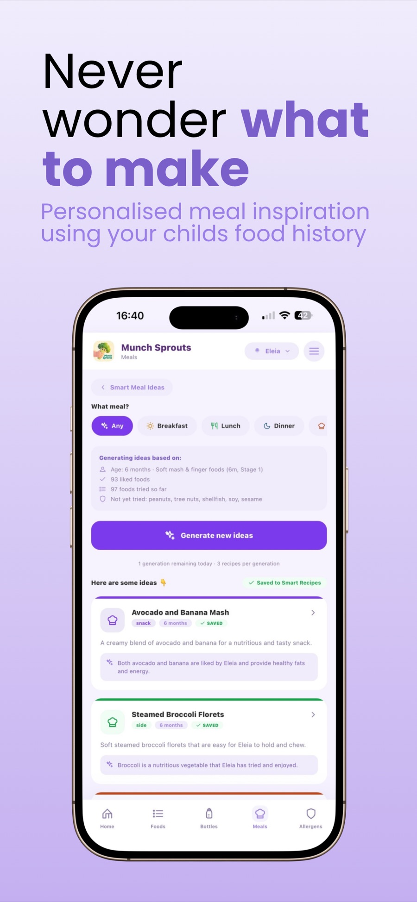
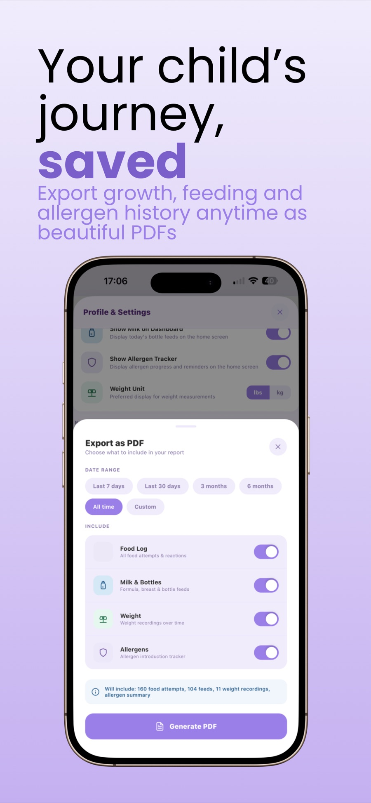

Discover
Translate a lived problem into clear product priorities and parent-focused journeys.
MunchSprouts · Product strategy · Native app · Brand
FE Studios took MunchSprouts from a parent’s experience with a paper weaning diary to a complete iOS and Android product—bringing feeds, first foods, allergens, recipes and useful insights together in one approachable place.

Project overview
01 · The challenge
Chloe was using an Ella’s Kitchen paper weaning diary to record her baby’s feeds and baby-led weaning journey. After a spill destroyed it, the tracking history she had carefully built was lost.
Recipes created a second point of friction. Suitable ideas were spread across different websites, making parents repeatedly search, save screenshots and piece together their own system. The opportunity was to replace both problems with one dependable, easy-to-use product.
Give parents one dependable place for the information they need, without risking the journey they have already recorded.
02 · The approach
The product was structured around quick, repeatable actions that fit into an already busy day. A single dashboard brings food progress, likes and dislikes, allergen introductions and recent milk intake together, while focused forms keep each new entry manageable.

Core product journeys
The interface separates complex information into focused tasks, helping parents record what happened without navigating an overwhelming clinical-style system.



03 · From prototype to release
MunchSprouts began as a web app, allowing the core idea and user journeys to take shape quickly. It then developed into a native React Native application for iOS and Android, supported by a reusable design system and a promotional website.
FE Studios handled the UX, interface design, branding, development, research, testing, publishing and App Store release. Supporting posters and promotional materials carried the same identity beyond the product itself.
Translate a lived problem into clear product priorities and parent-focused journeys.
Create a reassuring identity, clear hierarchy and reusable interface system.
Move from an early web app into a native React Native product for both platforms.
Test, publish, support the store release and continue improving the live product.

Connected information
The product does more than store individual entries. It uses the growing history to surface patterns, support meal planning and produce portable records selected by the parent.



04 · Solving the difficult parts
Building a useful recipe library at launch was a significant content challenge. AI-assisted functionality helped support personalised insights and recipe ideas, while the product experience kept those tools grounded in each child’s recorded history.
Performance issues also emerged as the feature set grew. These were diagnosed and refined before release so the experience remained responsive. Product marketing proved to be the longer-term challenge, leading to continued work across the website, promotional assets and product messaging after launch.
Responsible positioning: MunchSprouts supports organisation and awareness. It is not presented as a substitute for professional medical or allergy advice.
05 · The outcome
The initial product moved from idea to release in approximately four weeks. MunchSprouts is now available as a native mobile app, supported by its own promotional website and an expanding feature set.
The result is a single, persistent place for a child’s feeding journey—replacing vulnerable paper records and scattered recipe searches with a product that can continue to improve as parents use it.
“FE Studios brought the MunchSprouts website and app to life in a way that feels completely right for the business. I use the app daily with my child, and other mothers now use it too.”
Have an idea that needs shaping?
You do not need a finished brief. Send over the problem, the audience and what you would like to change, and I’ll respond within three working days.